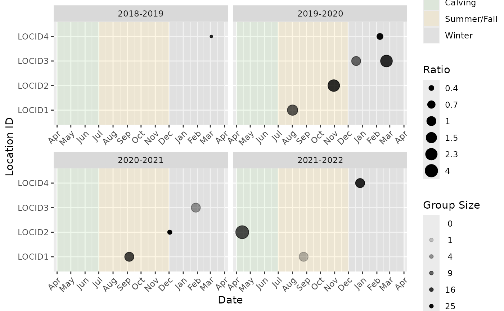

Generates bubble plot of ratio of the sex-age classes supplied to numerator
and denominator. Each point represents an event. The size of the point
represents the total group size, and the colour of the point represents the
value of the ratio. Note that a ratio value of "Inf" (infinity) indicates
that the group in a particular camera trap event has no individuals in the
denominator class. Similarly, a ratio of "0" indicates that the ratio in
a particular camera trap event has no individuals in the numerator class.
Usage
bpt_plot_ratios(
event_data,
location_data,
numerator,
denominator,
study_years = bpt_study_years(event_data),
locations = unique(location_data$location_id),
ratio_name = "Ratio"
)Arguments
- event_data
Tibble of templated event data.
- location_data
Tibble of templated location data.
- numerator
A character vector of sex-age codes to go in the numerator of the ratio.
- denominator
A character vector of sex-age codes to go in the denominator of the ratio.
- study_years
A character vector of study years to include in the plot.
- locations
A character vector of location_ids to include in the plot.
- ratio_name
An alternate name for the label for the value of the ratio on the plot legend. Defaults to "Ratio".
Examples
# Plot calf:cow ratio
bpt_plot_ratios(
event_data = event_data,
location_data = location_data,
numerator = c("f0", "m0", "u0"),
denominator = c("fa")
)

# Plot ratio of female:male yearling ratio in 2020-2021 at site RBLH007
bpt_plot_ratios(
event_data = event_data,
location_data = location_data,
numerator = "f1",
denominator = "m1",
study_years = "2020-2021",
locations = "LOCID1"
)